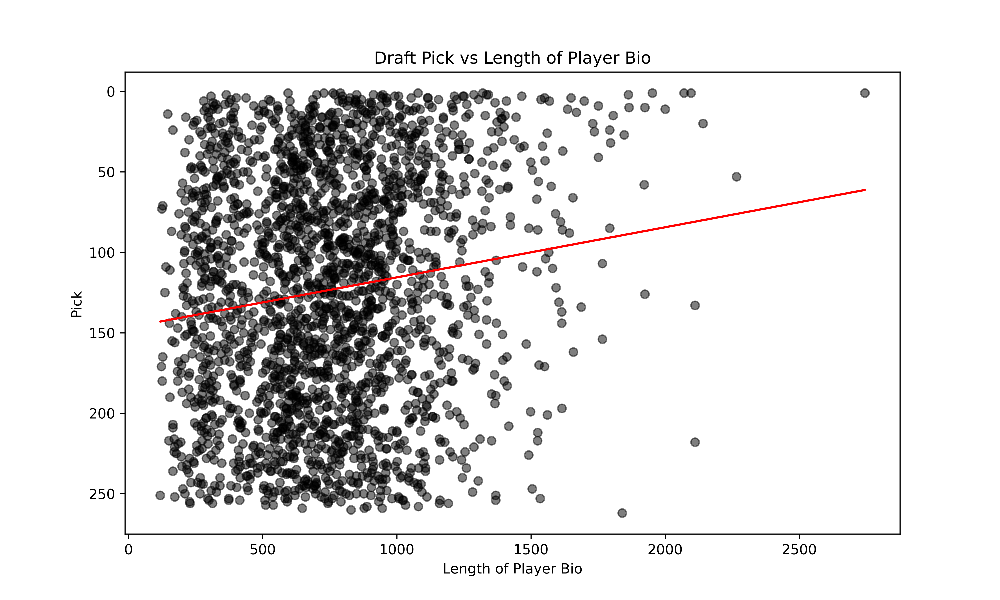
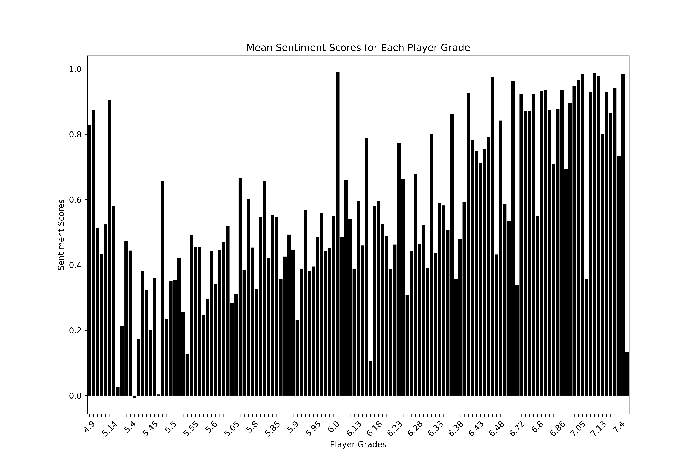

As college football players transition into NFL prospects, the value of their quantitative data diminishes. Translating performance at the collegiate level, in conjunction with NFL Combine metrics, can only get you so far in terms of predicting NFL success. Things like prospect interviews and scouting reports can be overlooked by technical people in favor of hard statistics. While on an individual level a prospect report may be anecdotal, on a larger scale it is possible to see patterns in qualitative data of prospects.
Using prospect reports scraped from the NFL.com Prospect Tracker, we can see how the words of scouts and analysts translate into when a player gets drafted.
Data Exploration
We will be using standard Python libraries for data processing, as well as the library scattertext for visualizing the natural language of the reports and the Python Natural Language Toolkit (NLTK) for processing text.
# Dependencies
import pandas as pd
import numpy as np
import nfl_data_py as nfl
import matplotlib.pyplot as plt
import seaborn as sns# Read in and get a feel for the data
df = pd.read_csv('dataset.csv')
df[['Player', 'Player Bio']].head() Player Player Bio
0 Jadeveon Clowney A physical specimen with a rare size-speed com...
1 Sammy Watkins A legitimate No. 1-caliber receiver who steppe...
2 Anthony Barr A highly disruptive, athletic specimen with th...
3 Khalil Mack A havoc-wreaking rush linebacker with the burs...
4 Jake Matthews Smart, tough, versatile franchise left tackle ...len(df)4382df['Draft Class'].value_counts()Draft Class
2020 500
2019 496
2018 470
2022 467
2021 465
2014 450
2023 413
2017 384
2016 375
2015 362
Name: count, dtype: int64This dataset includes over 4,000 NFL Draft prospect reports ranging from 2015 to 2023. Each prospect has a grade and a text-based bio.
Report Length
Does the length of the report correlate to when the prospect gets drafted?
There’s so much coverage of the NFL Draft these days and especially the top prospects. Let’s see if report length correlates to draft spot.
First let’s import draft picks:
import nfl_data_py as nfl
import certifi
import ssl
picks = pd.read_parquet("draft_picks.parquet")
# Keep only the columns we need
picks = picks[['season', 'pick', 'pfr_player_name']]picks.head() season pick pfr_player_name
0 1980 1 Billy Sims
1 1980 2 Lam Jones
2 1980 3 Anthony Munoz
3 1980 4 Bruce Clark
4 1980 5 Curtis DickeyNext let’s do an inner merge with our prospect report data to just get the players that were actually drafted:
picks = picks.merge(df, how='inner', left_on=['pfr_player_name', 'season'], right_on=['Player', 'Draft Class'])picks.head() season pick ... Draft Class Link
0 2014 1 ... 2014 https://www.nfl.com/prospects/jadeveon-clowney...
1 2014 2 ... 2014 https://www.nfl.com/prospects/greg-robinson/32...
2 2014 3 ... 2014 https://www.nfl.com/prospects/blake-bortles/32...
3 2014 4 ... 2014 https://www.nfl.com/prospects/sammy-watkins/32...
4 2014 5 ... 2014 https://www.nfl.com/prospects/khalil-mack/3200...
[5 rows x 8 columns]There will be plenty of prospects that go undrafted, so let’s drop any null rows:
picks = picks.dropna()Finally let’s calculate the length of the report and plot against draft position:
# Calculate the length of 'Player Bio'
picks['bio_length'] = picks['Player Bio'].apply(len)
# Sort dataframe by 'pick' in ascending order (for the inverted y-axis)
picks_sorted = picks.sort_values('pick')from sklearn.linear_model import LinearRegression
# Fit a linear regression model to the data
X = picks_sorted[['bio_length']]
y = picks_sorted['pick']
model = LinearRegression()
model.fit(X, y)LinearRegression()# Use the model to predict 'pick' for the observed values of 'bio_length'
y_pred = model.predict(X)
plt.figure(figsize=(10, 6))
plt.scatter(picks_sorted['bio_length'], picks_sorted['pick'], alpha=0.5, color='black')
plt.plot(X, y_pred, color='red') # plot the trendline
plt.gca().invert_yaxis() # Invert y axis
plt.xlabel('Length of Player Bio')
plt.ylabel('Pick')
plt.title('Draft Pick vs Length of Player Bio')
plt.show()
We see a slight correlation between how much is written about a player and how early they get drafted. Next, let’s take a look at how the sentiment of the report translates to the prospect grade.
Sentiment Analysis
Does the sentiment of a report translate to the assigned grade?
To assess the validity of this grading system, let’s compare the sentiment of the bio to the player grade. We will use the VADER sentiment analysis tool in conjunction with the NLTK library to assign a sentiment score to each player bio. VADER is designed to assess the sentiment of social media posts but it works well for most text data.
First, let’s import the sentiment analyzer package from NLTK:
from nltk.sentiment.vader import SentimentIntensityAnalyzer
sia = SentimentIntensityAnalyzer()Next, let’s remove stopwords (words like ‘a’, ‘the’, etc. that provide no value to assessing sentiment) from our text to speed up processing time and increase accuracy.
In order to remove stopwords, we first need to tokenize our text. Tokenization is the process of converting words into smaller numerical units that a computer can understand called tokens. Tokens can be words, groups of words, subwords, or characters.
Let’s wrap all this preprocessing into one convenient function:
from nltk.tokenize import word_tokenize
from nltk.corpus import stopwords
# Define set of stopwords
stop_words = set(stopwords.words('english'))
# Player bio preprocessing function to tokenize, remove stopwords, and remove numerical values
def preprocess(bio):
word_tokens = word_tokenize(bio)
filtered_sentence = [w for w in word_tokens if not w.lower() in stop_words and w.isalpha()]
return " ".join(filtered_sentence)I’m going to create a copy of our original dataframe in order to keep everything organized; then let’s apply the preprocessing function:
sentiment = df.copy()
sentiment['Preprocessed Bio'] = sentiment['Player Bio'].apply(preprocess)Now that our text is preprocessed we can apply the sentiment analyzer to it and then grab the compound portion of that analysis to get the sentiment score (0 most negative to 1 most positive):
sentiment['Sentiment'] = sentiment['Player Bio'].apply(lambda bio: sia.polarity_scores(bio))sentiment['Sentiment'] = sentiment['Player Bio'].apply(lambda bio: sia.polarity_scores(bio)['compound'])Let’s plot the sentiment score against the player grades:
plt.figure(figsize=(12, 8))
barplot = sns.barplot(x='Player Grades', y='Sentiment', data=sentiment, ci=None, color='black')
plt.title('Mean Sentiment Scores for Each Player Grade')
plt.xlabel('Player Grades')
plt.ylabel('Sentiment Scores')
# Set xticks every nth label
n = 5 # Show every 5th label
for ind, label in enumerate(barplot.get_xticklabels()):
if ind % n == 0:
label.set_visible(True)
label.set_rotation(45) # Rotate the labels that are visible
else:
label.set_visible(False)
plt.show()
If you really strain your eyes you can see a slight upward trend of calculated sentiment as the player grades increase. We see high sentiment scores across the board, even some big spikes in positivity at the very low end of the grade scale, which are prospects that will probably go undrafted. The reason for this is likely due to the public nature of these prospect reports.
Public draft analysts have nothing to gain by thrashing a prospect — if a low-graded prospect succeeds and they write a positive report then they look like a genius, if they don’t then nobody remembers. Individual team prospect report databases are probably far more honest, because the scouts’ incentives are aligned to maximize draft pick value for their team.
Linguistic Variation
Can the specific language of the report reveal whether or not the analyst believes the prospect will be a year one starter or not?
Scattertext is a Python library created by Jason Kessler for “visualizing linguistic variation between document categories in a language-independent way”. We are going to use it to find out which words and phrases are most closely associated with day one starters versus backups.
First let’s split the players into two camps based on the NFL.com grading system — where 6.7 and above is a Year 1 Starter and anyone lower is likely to be a backup coming into the league or undrafted:
df['Player Class'] = np.where(df['Player Grades'] >= 6.7, 'starter', 'backup')Next, we’ll create a corpus, which is the object that Scattertext uses to parse through text:
from scattertext import CorpusFromPandas
from scattertext import whitespace_nlp_with_sentences
# Preprocess the Player Bio again
df['Preprocessed Bio'] = df['Player Bio'].apply(preprocess)
# Create a corpus
corpus = CorpusFromPandas(df,
category_col='Player Class',
text_col='Preprocessed Bio',
nlp=whitespace_nlp_with_sentences).build()Let’s create a dataframe of term frequency — this will count which words and phrases are most associated with Year 1 Starters versus backups:
# Create a term frequency DataFrame
term_freq_df = corpus.get_term_freq_df()
term_freq_df starter freq backup freq
term
physical 16 191
specimen 2 2
rare 11 36
combination 6 45
clowney 1 0
... ... ...
football coveted 0 1
coveted free 0 1
agent goes 0 1
undrafted given 0 1
given traits 0 1
[137242 rows x 2 columns]We will use frequency (how often a word or phrase occurs) and precision to quantify a word’s correlation to backup or starter classification. Precision is “the discriminative power regarding its frequency”; a word that appears 100% of the time for a starter would have perfect precision — if the word also appears for backups it would have lower precision.
Kessler explains in the Scattertext paper the complex math behind combining frequency and precision into a scaled F-score. For the purposes of this post, we will not be diving into the math but I recommend reading the paper.
Here’s how we plot the correlation of words to starters versus backups. It will create an HTML file which you can view and interact with in a web browser:
import scattertext as st
html = st.produce_scattertext_explorer(corpus,
category='starter',
category_name='starter',
not_category_name='backup',
width_in_pixels=1000,
minimum_term_frequency=10,
metadata=df['Player'],
term_significance=\
st.LogOddsRatioUninformativeDirichletPrior())
file_name = 'starter_v_backup.html'
open(file_name, 'wb').write(html.encode('utf-8'))3589491Click to get an interactive, searchable view of the chart (it can take up to 30 seconds to load):

Conclusion
Qualitative data can be undervalued or completely ignored by the analytics community. But often, front offices base major roster decisions on the qualitative opinion of a scout or analyst. There is really is value in what the scouts see in prospects and this value is often translated into a text-based report. Now more than ever, there are tools with which to analyze this text that can expose trends and bias.
The dataset for this project is entirely public, but imagine what could be done with a team’s private database of prospect reports? We could combine the expertise of hundreds of scouts over decades of evaluating players and likely reveal persistent bias within organizations.
Citations
@article{kessler2017scattertext,
author = {Kessler, Jason S.},
title = {Scattertext: a Browser-Based Tool for Visualizing how Corpora Differ},
booktitle = {Proceedings of ACL-2017 System Demonstrations},
year = {2017},
address = {Vancouver, Canada},
publisher = {Association for Computational Linguistics},
}
@misc{
danovitch2019trouble,
title={Trouble with the Curve: Predicting Future MLB Players Using Scouting Reports},
author={Jacob Danovitch},
year={2019},
eprint={1910.12622},
archivePrefix={arXiv},
primaryClass={cs.CL}
}